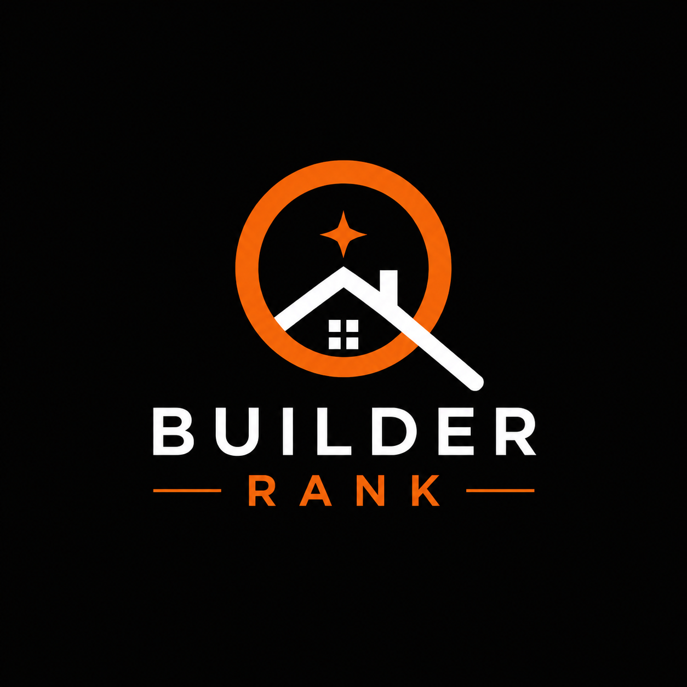

Report Card

Builder Rank LLM visibility reports for general contractorsBuilder Rank
See how clearly AI can understand your contracting business.
Builder Rank grades general contractor websites for LLM readability, local trust signals, and answer-engine visibility across ChatGPT, Claude, Gemini, and future AI search tools.
Ready to run a local website audit.
Highest Impact Fixes
What to change first
Customer Intent
Searches AI should connect to this GC
Live Model Analysis
ChatGPT, Claude, and Gemini
Audit Evidence
What the local crawler read
Product Roadmap
From audit to autopilot
Phase 1
LLM report card
Audit entity signals, semantic coverage, and AI-friendly technical structure.
Phase 2
Auto-optimization
Generate schema, llms.txt, localized service copy, and backend implementation tasks.
Phase 3
LLM traffic dashboard
Track AI referrals, quoted services, contact conversions, and visibility by market.